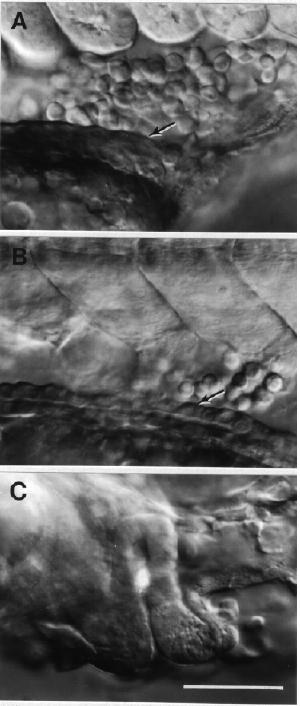

Modified from: Kimmel et al., 1955. Developmental Dynamics 203:253-310. Copyright © 1995 Wiley-Liss, Inc. Reprinted only by permission of Wiley-Liss, a subsidiary of John Wiley & Sons, Inc.
Fig. 20. Pronephric duct morphogenesis near the region where the anus forms. Left side Nomarski views, dorsal to the top, anterior to the left. A: At the 21-somite stage (19.5 h) the pronephric duct (arrow), not hollow at this time, courses around the posterior end of the yolk extension. The blood island, just above, is posterior the site where the duct will open to the outside, and just ventral the somites. B: By the the prim-5 stage (24 h) the pronephric duct (arrow) has a lumen all along its length. C. The duct opens to the outside. A bright crystalline inclusion is present within it; this is not unusual to see. Scale bar: 50 µm for A & B, 39 µm for C.

Figure 20